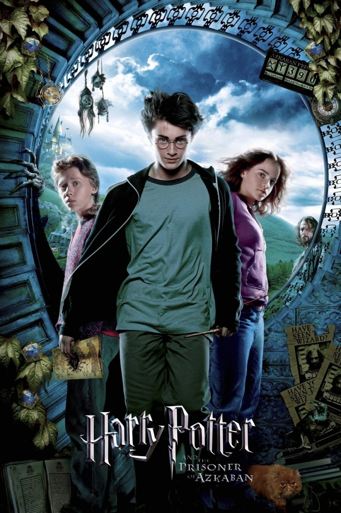

The film series based on the Harry Potter novels by author J. K. Rowling is distributed by
Warner Bros. and consists of eight fantasy films. Here are demonstrated the posters for each of them:
Harry Potter and the Philosopher's Stone (2001)Harry Potter and the Chamber of Secrets (2002)

Harry Potter and the Prisoner of Azkaban (2004)Harry Potter and the Goblet of Fire (2005)Harry Potter and the Order of the Phoenix (2007)Harry Potter and the Half-Blood Prince (2009)Harry Potter and the Deathly Hallows – Part 1 (2010)Harry Potter and the Deathly Hallows – Part 2 (2011)